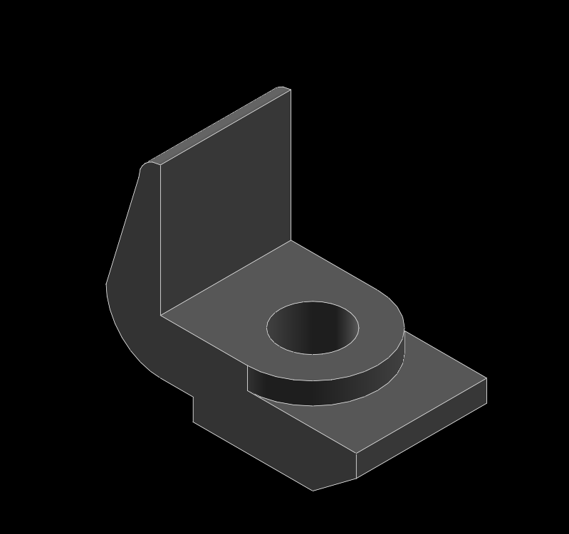
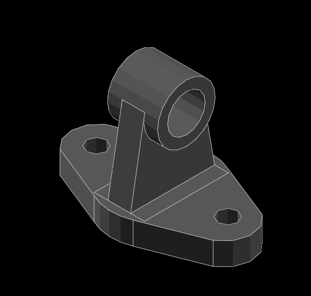
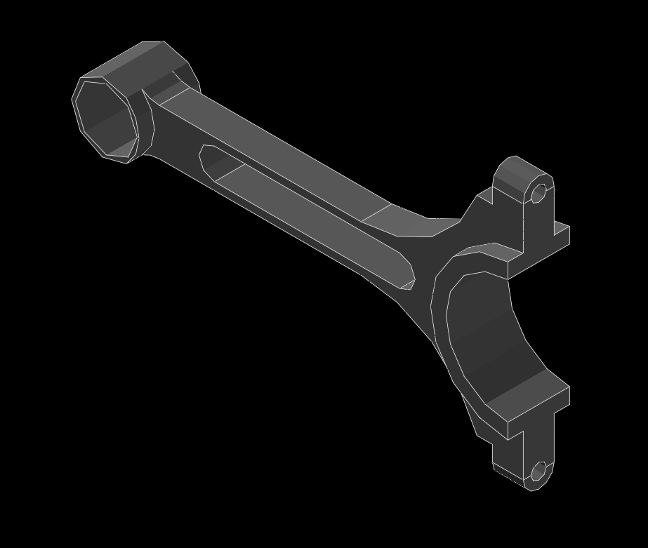

Week2~Week5 <<
Previous Next >> Week10~Week14
Week6~Week9
Week6
1.機械設計工程系-電腦輔助設計實習 W6 任務一參數化零組件繪製
(1)繪製基本零件(車體底盤.輪子.軸.支撐軸):使用線條(S)及圓(R)畫出所需外型，再使用草圖展出(Shift+X)畫出展出或切除尺寸。
(2)組裝零件:使用(X)讓零件法線方向相同後，使用(O)讓兩零件之兩點接合，即完成。
成品圖

2.機械設計工程系-電腦輔助設計實習 W6 任務二網際 V-rep 模型控制
(1)下載 V-rep 3.6.1 rev 4.7z 及web_vrep2.zip (local)並解壓縮到隨身系統裡。
(2)打開vrep.exe並開啟web_vrep2裡的two_wheeler.ttt。
(3)打開web_vrep2裡的app.py並執行，進入到http://127.0.0.1:5000/。
(4)按開始之後，就可以控制車了。
3.機械設計工程系-電腦輔助設計實習 W6 任務三新增啟動與停止按鈕
(1)開啟D:\web_vrep2\templates中的contrils.html，隨便複製一行當作修改內容，把up改成start及stop。
(2)接著開啟D:\web_vrep2中的vrep_linefollower.py，新增啟動與停止的指令程式碼，完成後即可操作啟動與停止鈕。
Week7
Solvespace 編譯與參數繪圖驗證
1.Solvespace 編譯-加入學號
(1)到個人隨身系統的solvespace\build\scr\CMakeFiles\solvespace.dir底下，找到solvespace.cpp.obj檔案並刪除。
(2)到solvespace\scr底下，找到solvespace.cpp並用編譯器開啟，利用ctrl+F搜尋GPL找到This is solvespace字串，並在後面加上is compiled by 學號。
(3)到start_mdecourse，輸入cd solvespace\build->mingw32-make，等待完成後，開啟solvespace.exe案Help->About就完成了。
編譯-加入學號圖

2.Solvespace 參數繪圖驗證
(1)
成品圖

(3)
成品圖
(4)
成品圖
(6)
成品圖

(7)
成品圖
(8)
成品圖
(10)
成品圖

(11)
成品圖
(12)
成品圖
(13)
成品圖
(14)
成品圖

(15)
成品圖
(16)
成品圖
(18)
成品圖
Week8
1.啟用CMSiMDE中的網誌系統
(1)開啟start_mdecourse.bat，輸入leo。
(2)將個人倉儲中的config內的pelican.leo用leo開啟。
(3)到個人網站，將blog的網址複製到@path . ./ -> Pelican設定 -> 遠端中SITEURL。
(4)再將底下的DISQUS_SITENAME改為自己的學號。
(5)在local_blog點選右鍵->點選goto script，將指令複製起來後，存儲。
(6)到個人倉儲下輸入指令。
(7)完成。
2.以ssh對Github連線
(1)到Y槽(Data)中的portablegit將sh_for_solvespace檔案複製並修改成sh.exe。
(2)開啟start_mdecourse.bat並輸入sh及ssh-keygen -t rsa -b 4096 -C "使用者學號"產生key，打上key的產生區域。
(3)下載putty.7z SSH 連線工具組，利用其中的 puttygen.exe 將上述建立的 Openssh keys 轉為 putty 可以辨識的格式。
(4)修改啟動的 start.bat 加入下列設定:
set GIT_HOME=%Disk%:\portablegit\bin\
set GIT_SSH=%Disk%:\putty\plink.exe
修改完成後,重新啟動。
(5)將要使用 ssh 連線的倉儲 .git 中的 config 檔案中的 url 設定改為 ssh 連線格式:url = git@github.com:倉儲名稱/cad2019.git。
(6)開啟 putty.exe 建立一個 session 名稱為 github.com, 其中指定 Connection -> Proxy 與 Connection -> SSH -> Auth。
(7)將下列字串加入編輯器並存儲到y:\home\.ssh\config:
Host github.com
User git
Port 22
Hostname github.com
TCPKeepAlive yes
IdentitiesOnly yes
(8)將所建立的OpenSSH格式的public key內容,送到Github帳號SSH settings中。
(9)完成。
3.導入Webots
(1)到http://mde.tw/cad2019/content/Webots.html中下載Webots_2019b_rev1.7z 解壓縮到Y槽(Data)。
(2)將隨身系統中的start_mdecourse.bat複製一個並改名start_mdecourse_webots.bat。
(3)打開編譯器，將start_mdecourse_webots.bat設定執行路徑及啟動指令。
(4)完成後，即可開啟Webots。
Week9
期中報告
Week2~Week5 <<
Previous Next >> Week10~Week14